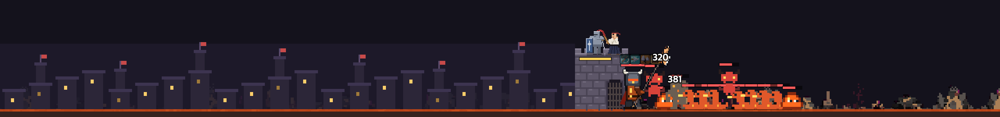
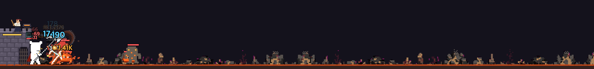
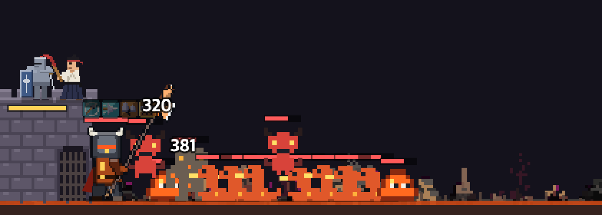
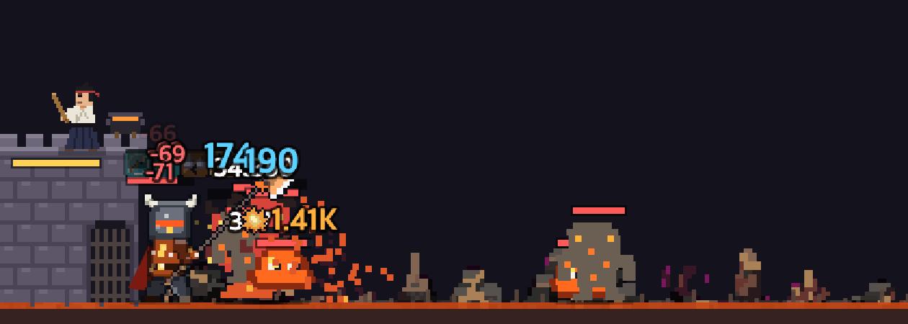
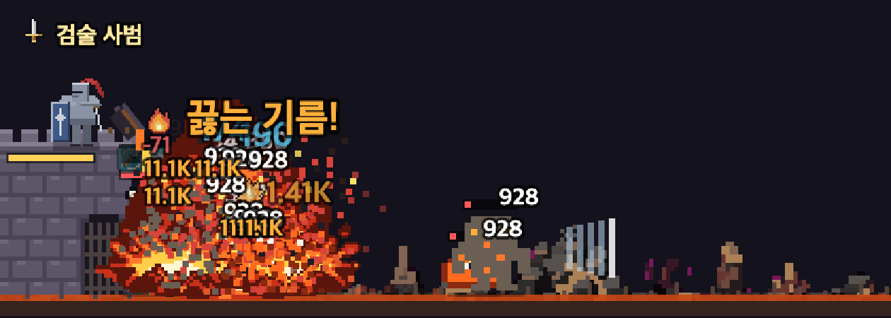
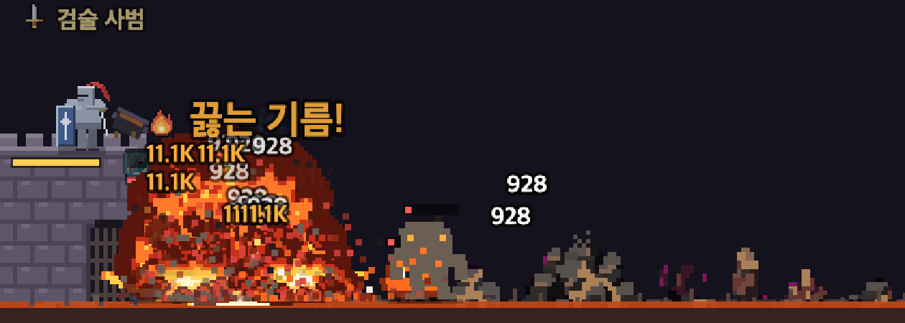
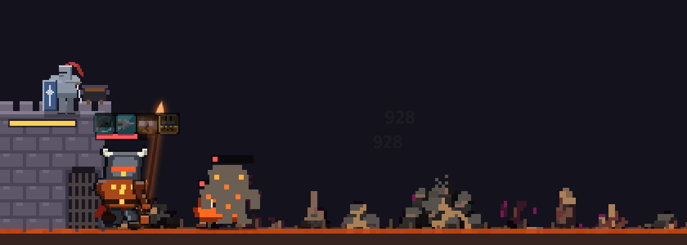

🏰 성벽 지키기 2차 개편 — 1:n 포위전 + 🔥 끓는 기름
2026-10-15 · 구현 끝, 사용자 확인 대기 · 테스트:
http://localhost:8846/index.html?server=http://127.0.0.1:9요지
- 성벽은 화면 왼쪽 끝. 몬스터는 화면 오른쪽 끝에서 달려와 성문 앞 480px 전장에 들어선다.
- 줄 서기 없음 → 포위: 잡몹이 기사 앞 (사거리 + 40px) 두께로 겹겹이 붙고, 붙은 몬스터가 전부 친다. 못 잡으면 쌓이고, 쌓이면 녹는다. 상태 칩
⚔️ 포위 n. - 잡몹 260 (1차 130 × 2), 5마리 무리가 1.5초 간격. 체력 ×0.4 · 공격력 ×2.4. 전장 건너는 시간 5초 (1차 12초). 단계 L 적 = 스테이지 4 + 2L (1차 10 + 2L).
- 🔥 끓는 기름 버튼: 쿨 15초, 성문 앞 90px에 기사 초당 피해 ×6 + 화상 3초 + 1.5초 기절. 그림은 기존 PixelLab 시트(e34·k23·h15)를 불 램프로 — 유료 생성 0회.
- 보상 그대로: 잡몹 점수 0.5 → 다 잡으면 150점 (🧱·📕·소탕 1차와 같음).
⏱️ 템포 조정 (10-15) — 이 카드가 아래 수치보다 우선
- 웨이브 간격 12 → 10초, 다 잡으면 3초 → 1초 뒤 다음 웨이브. 판 약 128초 → 약 100~110초.
- 잡몹 260 × 체력 0.4 → 130 × 체력 1, 단계에 따라 마릿수 40% → 100% (30단계부터 전부). 다 잡으면 늘 150점.
- 성벽 위 교관 끔 (검기 파동 없음). 단계 대응 −8 + 2L.
- 실측 (최고 100): 전쟁군주 34 · 대마법사 34 · 검성 24 · 신궁 22 — 광역 유리 콘텐츠로 확정 (사용자 10-15).
- 왜 마릿수를 줄였나: 한 발에 한 마리 잡는 기사는 잡몹이 약하면 공격 횟수에 막혀 단계와 상관없이 진다 (잡몹 195 · 간격 9초 안에서 신궁 11단계).
1. 전후 비교 (창 1280, 최고 스테이지 100 전쟁군주)
1차 — 전장을 오른쪽에 붙여 성벽이 x≈736, 왼쪽은 성 안 풍경. 몬스터는 기사 앞에 16px 간격으로 줄을 선다.

2차 — 성벽이 왼쪽 끝. 몬스터는 화면 끝에서 달려와 기사 앞에 무리로 붙는다.

1차 확대 (성벽부터 420px)

2차 확대 — 포위 8마리

2. 🔥 끓는 기름 (누른 뒤 0.5초 · 0.8초 · 1.4초)



가마솥이 기울며 기름 줄기 → 바닥에서 불 돔(e34)이 끓어올라 무리 피해 + 화상 불티(h15). 살아남은 적은 1.5초 멈칫.
3. 실측 — 실제 전투 (템포 조정 전 값 — 지금 값은 맨 위 카드) (봇 세이브 최고 100, 업그레이드 0, 단계마다 2판)
| 계열 | 간이 시뮬 한계 | 실제 한계 | 기름 매번 쓰면 | 한계+1 실패 모습 |
|---|---|---|---|---|
| 전쟁군주 (할버드) | 35 | 34~35 | 35 | 붕괴 · 쓰러짐 3 · 포위 최대 12 |
| 검성 | 34 | 34~35 | 35 | 붕괴 · 쓰러짐 3~5 |
| 대마법사 (원거리) | 36 | 34 | 36 | 붕괴 · 쓰러짐 4 · 포위 최대 23 |
| 신궁 (원거리) | 32 | 31 | 31 | 붕괴 · 쓰러짐 3 · 포위 최대 17 |
계열 차이 4 (1차 기준 8 이하). 한계 −5 단계(전쟁군주 29): 포위 평균 2.5 · 최대 7 · 쓰러짐 0. 성공 판 124~133초.
4. 간이 시뮬 — 계열별 한계 단계 (판정 칩이 쓰는 값, node dev/castle-sim.js)
업그레이드 0
| 계열 \ 내 최고 스테이지 | 40 | 60 | 80 | 100 | 120 | 150 | 200 |
|---|---|---|---|---|---|---|---|
| tyrant | 15 | 20 | 24 | 33 | 41 | 53 | 82 |
| skyGeneral | 15 | 20 | 23 | 33 | 39 | 50 | 74 |
| siegeMaster | 7 | 17 | 19 | 23 | 27 | 38 | 58 |
| thunderEmperor | 4 | 20 | 22 | 29 | 40 | 52 | 75 |
| archon | 13 | 18 | 22 | 25 | 32 | 44 | 72 |
| swordsaint | 12 | 19 | 22 | 28 | 39 | 52 | 80 |
| dragonlord | 15 | 20 | 23 | 29 | 41 | 50 | 74 |
| warlord | 15 | 20 | 23 | 32 | 39 | 51 | 74 |
| deadeye | 12 | 18 | 21 | 27 | 31 | 46 | 72 |
| voidArcher | 13 | 21 | 22 | 32 | 41 | 52 | 76 |
| archmage | 2 | 19 | 21 | 31 | 40 | 52 | 73 |
| frostlord | 3 | 18 | 21 | 28 | 35 | 48 | 66 |
| champion | 14 | 18 | 22 | 31 | 41 | 51 | 72 |
| tempest | 15 | 19 | 23 | 31 | 44 | 57 | 81 |
| grandmaster | 14 | 18 | 21 | 27 | 35 | 46 | 67 |
| 최저/중앙/최고 | 2/13/15 | 17/19/21 | 19/22/24 | 23/29/33 | 27/39/44 | 38/51/57 | 58/74/82 |
업그레이드 6종 전부 Lv10
| 계열 \ 내 최고 스테이지 | 40 | 60 | 80 | 100 | 120 | 150 | 200 |
|---|---|---|---|---|---|---|---|
| tyrant | 19 | 27 | 33 | 41 | 50 | 65 | 95 |
| skyGeneral | 20 | 25 | 30 | 44 | 51 | 64 | 88 |
| siegeMaster | 19 | 23 | 29 | 40 | 48 | 66 | 87 |
| thunderEmperor | 20 | 26 | 30 | 42 | 52 | 67 | 91 |
| archon | 20 | 24 | 35 | 40 | 47 | 61 | 87 |
| swordsaint | 19 | 27 | 34 | 47 | 54 | 68 | 96 |
| dragonlord | 20 | 26 | 31 | 42 | 52 | 62 | 90 |
| warlord | 20 | 25 | 32 | 42 | 50 | 65 | 89 |
| deadeye | 19 | 24 | 31 | 42 | 49 | 62 | 90 |
| voidArcher | 20 | 27 | 30 | 44 | 51 | 64 | 88 |
| archmage | 19 | 25 | 31 | 42 | 50 | 65 | 88 |
| frostlord | 20 | 26 | 32 | 43 | 51 | 66 | 86 |
| champion | 20 | 25 | 33 | 45 | 55 | 69 | 91 |
| tempest | 20 | 26 | 33 | 43 | 53 | 67 | 93 |
| grandmaster | 20 | 25 | 31 | 41 | 49 | 65 | 87 |
| 최저/중앙/최고 | 19/20/20 | 23/25/27 | 29/31/35 | 40/42/47 | 47/51/55 | 61/65/69 | 86/89/96 |
기준 (1차와 같음): 업그레이드 0 · 최고 100 → 28~42, 차이 8 이하 / 전부 Lv10 · 최고 200 → 85~95.
5. 수용 기준
- ✅ 성벽이 화면 왼쪽 끝 (1280 캡처 확인 · 코드상 모든 폭 x=0)
- ✅ 줄 없이 무리로 붙고, 붙은 몬스터가 모두 친다
- ✅ 한계 단계에서 포위 8 이상 쌓였다 풀린다 (12~23)
- △ 한계 −5 평균 포위 2 이하 → 실측 2.5 (근접)
- ✅ 원거리도 한계 근처에서 붙는다 (신궁 최대 17)
- ✅ 한계 +1 에서 첫 쓰러짐에 바로 무너지지 않는다 (3~5번 쓰러진 뒤)
- ✅ 최고 100 계열 한계 31~35 (시뮬 29~36), 판 4분 안
- △ 끓는 기름: 무리가 걷힌다 ✅ · 매번 쓰면 한계 0~2단계 (기준 1~3보다 약함)
- ✅ 보상 150점 → 🧱·📕 1차와 같음
6. 정할 것
- 끓는 기름 세기: 지금은 "잘 쓰면 0~2단계". 더 세게(필수 버튼) vs 지금처럼(보조 반격)?
- 난이도 대응: 단계 4+2L 로 1차와 같은 진행감(최고 100 → 약 33단계)에 맞췄다. 기존 유저의 깬 단계는 그대로 두고 다음 단계부터 새 규칙이다.
- 배포: 확인되면 GAME_VERSION 올려 main 푸시.
7. 진행 봇 수급 전후 (node dev/progress-bot.js --days 14 --seeds 2, 전 = HEAD)
| 항목 | 1차 | 2차 (템포 전) | 2차 (지금) |
|---|---|---|---|
| 🏰 열림 (시간) | 2.4 | 2.4 | 2.4 |
| 🏰 14일 최고 단계 | 42 | 45 | 42 |
| 📕 하루 수급 (열린 뒤) | 11.8 | 11.8 | 11.9 |
| 🏰 업그레이드 완료 (열린 뒤 일) | 6.9 | 6.9 | 6.9 |
봇은 판정 칩용 간이 시뮬 한계로 오른다. 수급(📕·🧱 → 업그레이드 기간)은 그대로, 단계만 3 높게 오른다 (단계 대응 4+2L 이 시뮬 기준 약간 쉬움).